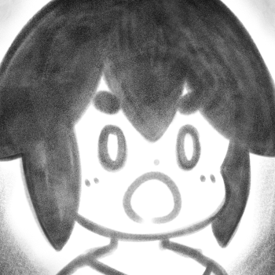

please call me cakwe
my hobbies myanimelist frequently asked questions
> Who is CAKWE?
I'm a visual artist that specializes in 2D digital work! 🎨 🖼️ 🎬

> Wait, you're NOT a vtuber?

TL;DR WELL, YES, BUT ACTUALLY, NO, I DON'T THINK I'M A VTUBER? AM I..??
I started streaming my art on Twitch as a pngtuber / gif-tuber back in 2019.
Then, when the "vtuber boom" happened, I watched tutorials on how to make a Live2D model, thinking I can offer that as a commission service.
I made a sample Live2D model of my OC (original character for another personal project) and tried to stream with my sample model.
Streaming ended up being a very fun hobby.
Since I offer art commissions, I often stream my process whenever possible.
When I'm not doing creative stuff, I stream games and IRL!
As time goes on, my audience ended up associating the name "CAKWE" with my OC Live2D model.
So yeah, I'm definitely a content creator, but I'm not sure if I'm a vtuber, because I don't roleplay as a character / voice act as the character you see on the screen.
I'm just me, having fun on stream, maybe doing a bit / putting on an act to be funny sometimes. Yes, I do yap a lot, both on stream and IRL not sorry tbh
> Why is your name CAKWE?

Activities
- Cleaning — When I lose control of my life, at least I can control how clean I want my room to be ehe
- Open VSCode and update this website manually — It's cheaper than using a website builder
- Make covers and music with Ableton — haha plugins go wHEEEEEEE(E-E-E-E)eeeeeₑₑₑₑₑₑ.....
- Keeping my thoughts and goals in my journal
- Read manga + watch anime + play games
Regarding my lists, I just type these down in no order (whichever / whoever pops up in my mind) and it changes with time.
fandom + interest list
- VALORANT RIOT AND FORTICHE, GIVE ME VALORANT ANIMATED SERIES AND MY LIFE IS YOURS!!!!!!!!!!!!!!!!!!!
- !!!! TOUHOU PROJECT !!!! I usually play on normal. I also highly enjoy the comic series. PLEASE read Suichouka / Lotus Eaters
- Pokémon core series games (my fave region: trumpets) also omg pokemon Z is real now in this timeline
- Shiny Mini Sensei I wonder how long until we get SMTVI... 2030?? sighs
- Rhythm + Arcade games (Arcaea, D4DJ, Maimai, Pump It Up, Taiko no Tatsujin, WMMT) also I may not go to arcades as often anymore, but I still like them ehe
- Ace Attorney franchise (DAI GYAKUTEN SAIBAN AND MILES EDGEWORTH INVESTIGATION 2 HAS FINALLY BEEN TRANSLATED THANK YOU CAPCOM)
fave / bias / oshi list
- (Touhou) Yuyuko Saigyouji + ship with Yukari Yakumo
- (Touhou) Kasen Ibaraki
- (Pokémon) Steven Stone / Daigo Tsuwabuki
- (Pokémon) Kyogre / Primal Kyogre
- Markiplier
...I may or may not have spent money on Markiplier's OnlyFansOKAY YEAH I BOUGHT IT BUT IT'S FOR CHARITY - insert various mobage characters here, e.g. Mutsunokami Yoshiyuki (Touken Ranbu), Cecil Aijima (UtaPri), Ozymandias (FGO), Belial (GBF), Mostima (Arknights), Dorothy (NIKKE)
> can you recommend some anime series to watch?
Click here to get redirected to My Anime List, sorted by score + alphabetically.The titles I've marked with a score of 8 ~ 9 are anime shows / series I think worth watching and recommend. Score of 7 means it's enjoyable for me, but I won't recommend it to my friends unless they like the genre / themes. Score of 6 means I disliked it and won't recommend it. Please note that a lower score rating doesn't necessarily mean the anime's bad, and vice versa -- a high score doesn't mean it's a masterpiece.
Example: I really, really liked Uta no☆Prince-sama♪ Maji Love Kingdom Movie and that was one of the BEST CINEMA EXPERIENCE I've ever had. Super fun and memorable. However, not everyone follows this series, and not everyone likes the idol genre. Oh, also? It's waaaay more hype when watching it on the big ass screen with 50 other people in that room Hence the score of 7 -- I won't recommend it to the general audience, but I would highly recommend it to someone who likes singing and dancing anime boys
These scores are given on a whim so do not ask me why 86 has a lower score than Osomatsu. It's not that serious (inb4 86 fans try not to "this is the best anime i've ever watched" challenge) also mostly because scoring depends on if I personally enjoyed it watching it or not.